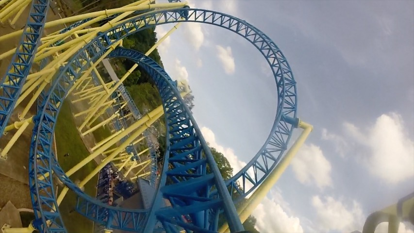
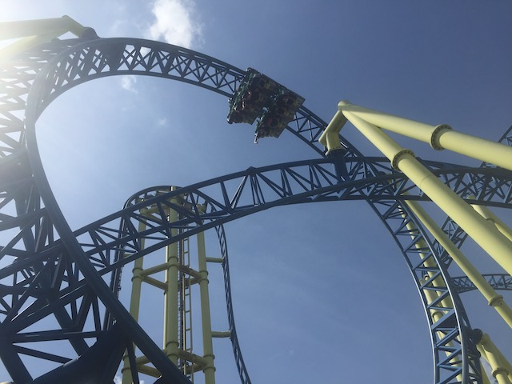
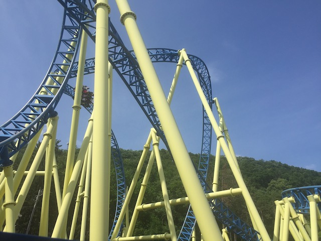
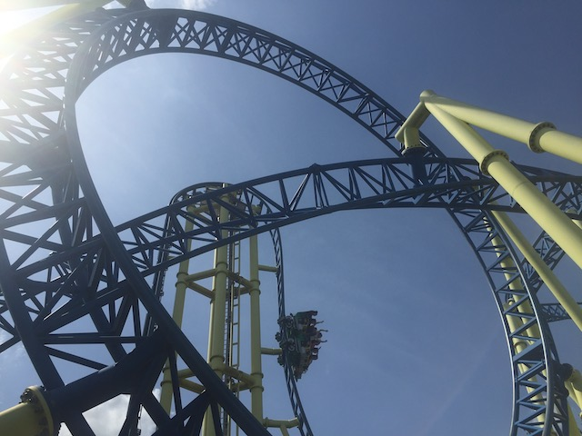

| |
Impulse Review

For today's review, we are heading to Knoebels to review Impulse, the one major steel coaster at Knoebels, as well as the one thing at the park that could be described as a modern coaster with inversions. Now if you look at this ride and don't know much about it, you might grow a big smile on your face. Because this ride looks EXTREMELY similar to Wicked @ Lagoon. And there are a few things they have in common. They're both Zierer coasters, which are normally known for their family coasters, such as Jaguar and Pepsi Orange Streak. But occasionally, they make big coasters, such as this, Wicked, and Verbolten. But sadly, this is probably their most standard adult coaster. That tower, unlike on Wicked, is NOT a launched hill. Just a standard vertical lifthill. Oh well. It's still a fun ride. Get in the seats, pull down the lap bars, and we're off! We roll around a large turn and begin climbing the vertical lifthill. These are alays a lot of fun. Not sure why, but vertical lifthills are always fun. Giving a feeling of gonna fall out. Eventually, we reach the top, stop looking at the sky, and get a nice quick view of the rest of Impulse. But too late! We drop on down! We gain a decent amount of speed and just plunge straight towards the ground! Always a big fan of vertical drops. First things first, we head straight up into a cobra roll. It's nothing special. But hey. We get some decent forces here. And with it ust being lap bars only, there's no headbanging. Flip upsidedown, twist back upsidedown, and we're back down. We then head straight into a vertical loop. It's nothing amazing, but still pretty fun. We exit out of that and into a curved hill. Not a ton of laterals here. But still a decent amount of force. And we're having fun. Honestly, this ride is basically just a Euro Fighter. No really. It rides EXACTLY like one. Except the drop here is only 90 degrees instead of going beyond 90 degrees. Other than that, the layout is EXACTLY like it. You can honestly BARELY tell that it's a Zierer. And it's FAR more similar to all the Eurofighters than to Wicked. We twist out of the curved hill and go straight into an upward helix. There's some decent forces here and.....WHOA!!! Inline Twist. There's some nice hangtime here. I like it. And we're back into another upward helix. You know, I'm starting to enjoy this ride. And then we glide right into the brake run. Aww. It's over already. Yeah. Impulse is a bit of a short ride. It's mostly just inversions. But you know what? That's OK. It's still a lot of fun and provides a unique experience at Knoebels as they don't have another coaster like it. Is it the best ride ever? No. Not by any means. But it still is a really fun coaster that I enjoyed and look foreward to reriding when I get back to Knoebels.
8/10
Location: Knoebels
Opened: 2015
Built by: Zeirer
Last Ridden: June 26, 2021
Here's my raw footage video of Impulse.
Impulse Photos






Home
|